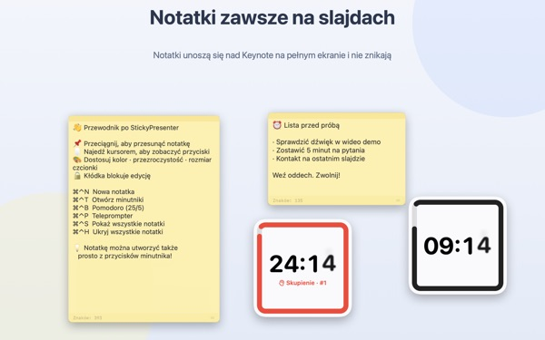
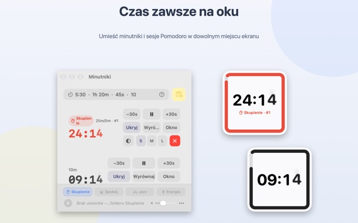
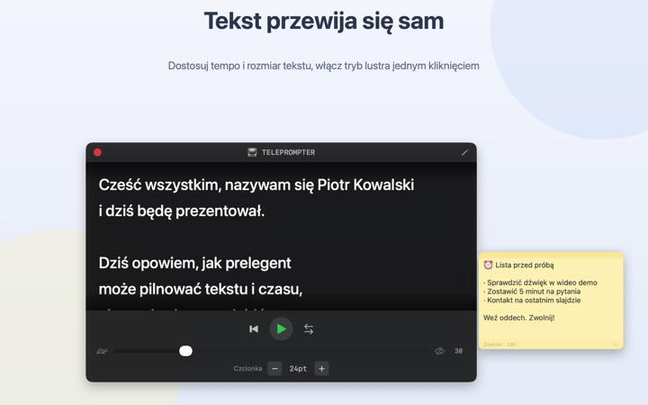
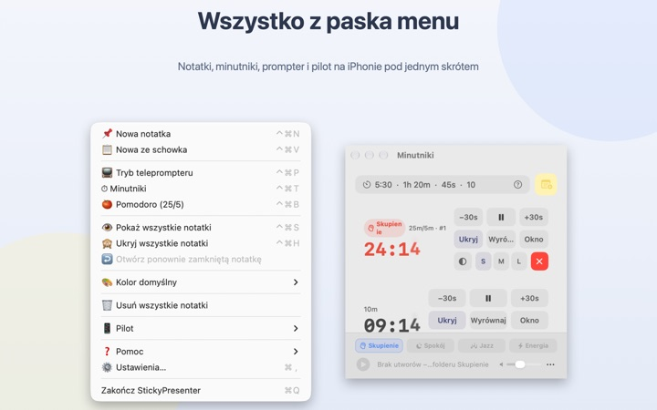

Tekst i pozostały czas
prosto na slajdzie
Włącz Keynote na pełny ekran, a notatki i minutnik zostaną na wierzchu. Nigdy nie zabierają fokusu aplikacji do prezentacji, więc pilot dalej przełącza slajdy.
Wszystkie funkcje są bezpłatne. Wymaga macOS 14 lub nowszego.

Wypróbuj na slajdzie
Wpisz czas tak jak w aplikacji. Stuknij 15s, żeby zobaczyć, jak widżet ostrzega, gdy czas się kończy.
Gdzie trzymasz tekst i zegarek podczas prezentacji?
Widok prezentera wymaga drugiego ekranu, a zerknięcie na zegarek publiczność zawsze zauważy. Może zdarzyło ci się przykleić karteczkę do laptopa i patrzeć, jak spada. StickyPresenter przypina tekst i pozostały czas tuż nad slajdem, tam, gdzie i tak patrzysz.
Jedno spojrzenie i wiesz, ile zostało
Kwadratowy widżet w rogu pokazuje pozostały czas. Gdy koniec się zbliża, robi się czerwony, a gdy czas minie, rozlega się sygnał i miga ramka.
Wpisuj czas, jak ci wygodnie, np. 5:30 albo 1h 20m, a 25/5 uruchomi Pomodoro, które przeplata skupienie i przerwę. Otwórz minutnik w osobnym oknie, żeby przy udostępnianiu ekranu lub przez AirPlay pokazać tylko je.

Czytaj tekst, patrząc w kamerę
Teleprompter przewija tekst w wybranym tempie i sam zatrzymuje się na końcu. Skopiuj tekst, naciśnij ⌘⌃P i otworzy się od razu z nim.
Jest też tryb lustrzany do teleprompterów z szybą półprzepuszczalną, a tempo i rozmiar czcionki zostaną zapamiętane na następny raz.

Nie odchodzisz od slajdu
Aplikacja działa po cichu w pasku menu, bez ikony w Docku i bez okien do pilnowania. Skróty takie jak ⌘⌃N dla nowej notatki i ⌘⌃T dla minutników działają nawet w Keynote na pełnym ekranie.
Na scenie bezpłatna aplikacja na iPhone’a Remote Controller for Sticky pozwala uruchamiać i wstrzymywać minutnik oraz przesuwać widżet, gdy zasłania slajd.

Trzy kroki na start
- 1
Otwórz aplikację
W pasku menu pojawi się ikona notatki, a za pierwszym razem otworzy się krótki przewodnik.
- 2
Dodaj notatkę i minutnik
Skopiuj tekst i naciśnij
⌘⌃V, a potem wpisz długość wystąpienia w polu minutnika. - 3
Przejdź na pełny ekran
Notatka i minutnik zostają na wierzchu.
Skróty i formaty czasu
- ⌘⌃N
- Nowa notatka
- ⌘⌃V
- Nowa notatka ze schowka
- ⌘⌃T
- Pokaż lub ukryj minutniki
- ⌘⌃B
- Uruchom Pomodoro (25 min skupienia, 5 min przerwy)
- ⌘⌃P
- Teleprompter
- ⌘⌃S · ⌘⌃H
- Pokaż lub ukryj wszystkie notatki
- 10
- Sama liczba oznacza minuty (10 min)
- 5:30 · 1:15:00
- Minuty:sekundy, godziny:minuty:sekundy
- 1h 20m · 45s
- Z jednostkami
- 25/5
- Skupienie/przerwa na zmianę, aż zatrzymasz
Wszystkie skróty używają razem klawiszy Command (⌘) i Control (⌃) i działają, nawet gdy jesteś w innej aplikacji. Minutnik można ustawić do 99:59:59.
Częste pytania
Czy to naprawdę za darmo?
Tak. Wszystkie funkcje są bezpłatne, a aplikacja na iPhone’a Remote Controller for Sticky to osobna, bezpłatna aplikacja. Jeśli ci pomaga, możesz dać deweloperowi napiwek w Ustawieniach; niczego to nie odblokowuje.
Czy przy udostępnianiu lub dublowaniu ekranu mogę pokazać tylko minutnik?
Tak. Przyciskiem Okno w wierszu minutnika otworzysz go jako zwykłe okno. Wtedy pojawi się na liście okien przy udostępnianiu ekranu i w AirPlay, i możesz udostępnić tylko je.
Ukryłem widżet minutnika i nie mogę go znaleźć.
W oknie minutników najedź wskaźnikiem na wiersz tego minutnika, a miejsce widżetu zostanie obrysowane przerywaną linią. Kliknij Wyrównaj, żeby przywrócić go obok okna minutników.
Niechcący zamknąłem notatkę.
Opcją Otwórz ponownie zamkniętą notatkę w pasku menu odzyskasz każdą z ostatnich 20. Notatki zapisują się w trakcie pisania i po ponownym otwarciu aplikacji wracają w to samo miejsce.
Skrót nie działa.
Jeśli tabela skrótów w przewodniku oznacza go jako Używany przez inną aplikację, inna aplikacja zajęła go wcześniej. Zamknij ją, a skrót znów zadziała. Uprawnienie dostępności nie jest potrzebne.
Dlaczego motyw Kameleon prosi o nagrywanie ekranu?
Kameleon odczytuje kolor ekranu za widżetem i dopasowuje się do niego, a do tego potrzebuje tego uprawnienia. Nic nie jest zapisywane ani wysyłane. Bez niego motywy Systemowy, Jasny i Ciemny działają normalnie.
Jak dodać muzykę w tle?
Wybierz nastrój (Skupienie, Spokój, Jazz lub Energia) na pasku muzyki u dołu okna minutników, a aplikacja utworzy folder dla każdego z nich. Wrzuć tam własne utwory, a zagrają po kolei razem z minutnikiem. Aplikacja nie zawiera muzyki.
Pilot na iPhonie nie znajduje mojego Maca.
Sprawdź po kolei: czy StickyPresenter działa na Macu (ikona w pasku menu); czy oba urządzenia są w tej samej sieci Wi‑Fi, a nie w sieci dla gości lub na danych komórkowych; czy Sieć lokalna jest dozwolona w sekcji Prywatność i ochrona na iPhonie i na Macu; czy VPN jest wyłączony.
Pilot twierdzi, że kod parowania jest błędny.
Wpisz czterocyfrowy kod, który widać teraz w menu Pilot na pasku menu Maca. Jeśli kliknąłeś Nowy kod parowania, ważny jest tylko nowy. Po pierwszym sparowaniu pilot łączy się od razu po otwarciu aplikacji.
Czy ktoś inny może sterować moim minutnikiem?
Nie bez twojego kodu. Mac przyjmuje tylko piloty, które wpisały właściwy kod, przez szyfrowane bezpośrednie połączenie w sieci lokalnej. Jeśli ktoś widział kod, wybierz Nowy kod parowania lub Zapomnij sparowane piloty w menu Pilot.
Gdzie są przechowywane moje notatki i teksty?
Tylko na tym Macu. Bez konta, bez reklam, a do internetu nie trafia nic poza anonimowymi statystykami użycia i opiniami, które sam wyślesz.
Pytania, błędy albo pomysły? Napisz na mizzking75@gmail.com.